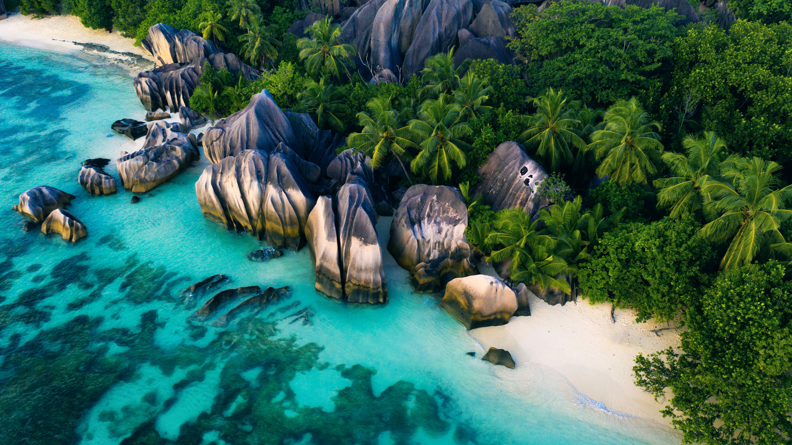

Waarom hier?
Contrast tussen turquoise baaien en een safari: olifanten bij zonsopgang, daarna of ervoor eilandrust op de Seychellen.
Ideeën voor onze trip
Mahé of Praslin, gecombineerd met bijvoorbeeld Kenia, Tanzania of Zuid-Afrika.

Contrast tussen turquoise baaien en een safari: olifanten bij zonsopgang, daarna of ervoor eilandrust op de Seychellen.
Mahé of Praslin, gecombineerd met bijvoorbeeld Kenia, Tanzania of Zuid-Afrika.